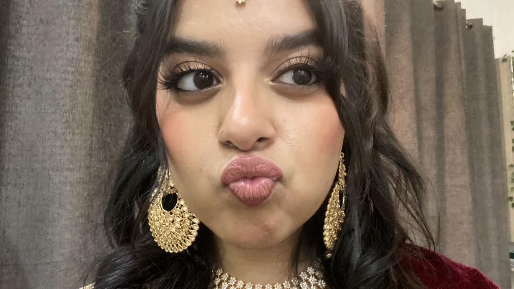

Happy Birthday, Fatima Abrar! 🎉
You are the Noor of my life. You make me happy, energetic, and human. With you, I felt I was living.
 **"You are my favorite thought of every day."
"Itni saari kissi karungi na..."
"I love that you are so protective and aware of me and everything around me"
"I've never been more in love"
"I want to finally be able to see you live, watch every movement of your body"
"And the desire to have you right here with me kills me"
"I’ve longed for you my entire life"
"I don’t want anyone else to see this side of yours ever"
"I wanna kiss u while sitting itna zyada that you fall back"
"Because you wanted to see me in red"
"I'm unhealthily obsessed w you"
"I feel like I'm on cloud 9"
"Mere paas ajayein"
"Ugh same... waiting for you"
"I love you so much"
"Always remember how much I love you"
"I'm so happy to be yours"
"Zyada drame na kiya karein okay?"
"Can you marry me and take care of me like I'm a little baby"
"Meow! Happy Birthday, mom. Daddy loves you very much.!"

A Special Letter
Dear Fatima,